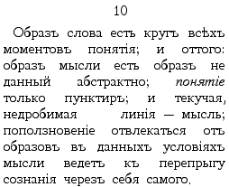
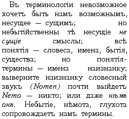

Glossolalia (Section 10)

The image of a word is a circle of all the moments of comprehension; and therefore: the image of a thought is an image not given abstractly; a concept is merely a dotted line; and a flowing, unbroken line is -- a thought; the feeble crawling urge to divert thoughts away from images in the given circumstances leads to a leap of consciousness across its very self.

In the terminology the impossible wants to be for us possible, the nonexistent -- existent; but those nonexistent not existing meanings are beingless; all concepts are -- words, names, essences, beings; but concept-terms are -- names turned inside out; if you turn the verbal sound (Nomen) inside out it almost comes out Nemo -- no one; or even in Russian he is dumb [nem on] Non-being, dumbness, deafness accompany the terms for us.